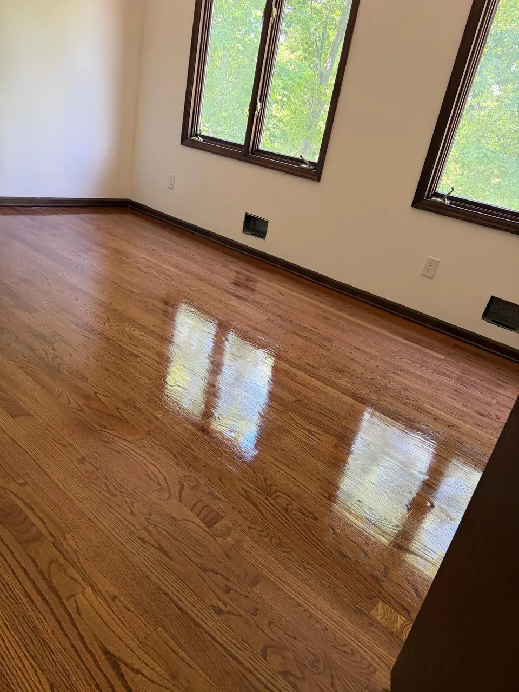
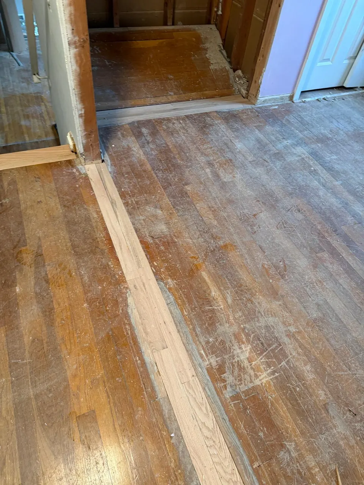

In this article
Quick answer
Hardwood floor refinishing removes the top layer of the floor and applies a new finish, which eliminates surface damage and restores the wood's original beauty. It's the right option when the floor has surface scratches, a dull or faded finish or minor stains, and the wood is still structurally solid.
Hardwood floors are one of the most valuable features a home can have. They bring warmth, durability, and a timeless look that many homeowners prefer over other flooring options. However, over time, even the best hardwood floors start to show signs of wear.
Scratches, fading, stains, and dull finishes can make floors look old and neglected. The good news is that in many cases, you don't need to replace them. Hardwood floor refinishing is a proven method for restoring old floors and bringing them back to life.
Understanding how refinishing works can help you decide if it's the right solution for your home.
What is hardwood floor refinishing?
Hardwood floor refinishing is the process of removing the top layer of the floor and applying a new finish, which eliminates surface damage and restores the wood's original beauty.
The process typically includes:
- Sanding down the existing finish
- Removing scratches and imperfections
- Applying stain (if desired)
- Sealing the floor with a protective finish
01Worn finishScratches and graying sit in the top layer.
02SandedThe old finish and the damaged top come off.
03Stained (optional)Even color across the fresh wood.
04SealedNew protective coats of finish.
This process allows the natural wood underneath to look fresh again, without the need for full replacement.
Eliminates scratches and surface damage
One of the most common problems homeowners face is scratched flooring. Daily foot traffic, moving furniture, pets, and dropped objects all contribute to visible damage over time.
Refinishing removes the top layer, where most scratches lie. After sanding, the surface becomes smooth again, eliminating years of wear.
This step is especially important for homeowners who want their floors to look clean and well-maintained without the need for replacement. (Not sure how deep your scratches go? See can scratched hardwood floors be fixed.)
Restores color and appearance
Over time, hardwood floors may lose their original color due to exposure to sunlight, spills, and general wear and tear. This damage can create an uneven appearance, with some areas looking faded and others appearing darker.
Refinishing corrects this issue by removing the worn finish and allowing a new stain to be applied evenly across the surface.

Homeowners can also choose to update the color during this process. Refinishing gives you flexibility to change the floor, whether you want a lighter, modern look or a darker, richer tone. Our floor staining page shows the most requested colors.
Extends the life of your floors
Hardwood flooring is a long-term investment, and refinishing helps protect that investment. Instead of replacing the entire floor, refinishing allows you to extend its lifespan by many years.
In most cases, hardwood floors can be refinished multiple times throughout their life, making refinishing a cost-effective solution compared to full replacement.
By maintaining your floors properly and refinishing them when needed, you can keep them looking new for decades.
Improves the overall look of your home
Worn-out floors can make an entire home feel outdated, even if the rest of the space is well-maintained. Because flooring covers a large area, its condition has a major impact on how a home looks and feels.

 Before
After
Before
After
Refinishing instantly improves the appearance of any room. Clean, smooth, and updated floors create a more modern and inviting space.
For homeowners planning to sell, refinished hardwood floors can make the property more attractive to buyers and increase perceived value.
A more cost-effective option than replacement
Replacing hardwood floors can be expensive and time-consuming. It often involves removing the existing flooring, preparing the subfloor, and installing new materials.
On the other hand, refinishing uses the existing floor structure, which reduces both labor and material costs.
For floors that are structurally sound but visually worn, refinishing may be the smarter financial choice.
When refinishing is the right option
Not all floors need replacement. In many cases, refinishing is enough to restore their appearance and function.
Refinishing is a good option when:
- The floor has surface scratches
- The finish looks dull or faded
- There are minor stains or discolorations
- The wood is still structurally solid
However, if the floor has severe damage, deep warping, or structural issues, replacement may be necessary. Damaged boards can often be handled first with floor repair.
A professional inspection can help determine the best solution. Book a free on-site check and we'll tell you plainly which option makes sense.
Why professional refinishing matters
While some homeowners consider DIY refinishing, the process requires skill, proper equipment, and experience. Incorrect sanding or uneven finishing can damage the wood.
Professional contractors ensure:
- Even sanding without damaging the wood
- Proper stain application
- High-quality protective finishes
- Clean and consistent results
They also minimize dust and ensure project efficiency. Here's how dust containment works during refinishing.
Final thoughts
Hardwood floor refinishing is one of the most effective ways to restore old floors without the cost of replacement. It removes years of wear, restores color, and extends the life of your flooring.
Refinishing your floors can refresh your space and make your home feel new again, especially if your floors look worn but are still in good condition.
Thinking about restoring your hardwood floors? Contact our team today to schedule your estimate and bring your floors back to life with professional refinishing.